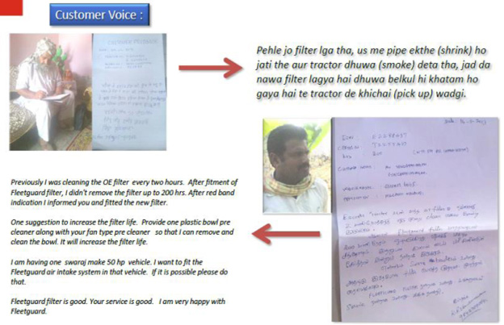

The Big Story
Industrial Innovation Award - for innovative air intake system for tractors
Background:
Escorts group is one of the leading manufacturers and suppliers of Farm products including the manufacturing of Agro-Machinery. Their tractors are mainly used on the farms for various purposes like ploughing and harvesting. The problem that their tractors were facing was that, their Air Filters would stop working in 2 hours' time after resuming the work in the field at the time of post paddy harvesting. The farmers would essentially have to get down, clean the filter and resume work again. It was really troublesome for the farmers to continue to work this way.
Problem on Hand:
The husk from the field is light in weight and is longer, like threads. The regular filters are meant for the regular dust and particles. This husk does not get filtered but gathers inside the filter making it incapable of working eventually. In case of the Escort Tractors, the life of these filters was close to just 2 hours. The regular filter life was thus affected due to this husk which is very common in the fields during the post paddy harvesting seasons. This dust is often combined with the husk making it more difficult to filter. Also, the Air filter is never to be cleaned but only replaced, the unprofessional cleaning would further damage the filter.
Role of Fleetguard:
The Escorts group approached Fleetguard with this problem on hand. The challenge for us now was to make an air filter that would last longer in the field. Our team then visited the location at Kurukshetra in Haryana. The dust and husk samples were then brought to Pune location for further testing and analysis. Our responsibility was now to design an air filter with a life of more than at least 100 hours.
After the initial analysis, lab tests and further analysis the designs were constantly revised and tested for the implementation of solution.
Success Story:
We managed to take up the up time of the air filter to 300 hours! That is more than 10 times of that of the closest competition. The farmers are happy with the new filter as it works well, way higher than their expectations. We as a company have discovered a new market and have discovered new avenues.
Heartiest congratulations to our team who has found a win-win solution for the problem. They have once again shown that any problem on hand can be converted in to an opportunity.
Letters from Farmers -
Fleetguard Team:
- Tarun Dham
- Yogesh Gaikwad
- Nishant Kulkarni
- Javed Akhtar
- Sudhir Vaidya
- Ankush Borate
- Omkar Jadhav
- Sidharth Magdum
- Vijay Joshi
- Dipak Mandage
- Prashant Kadam
- Mayur Aru